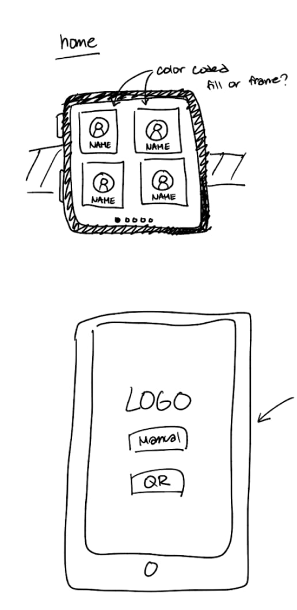
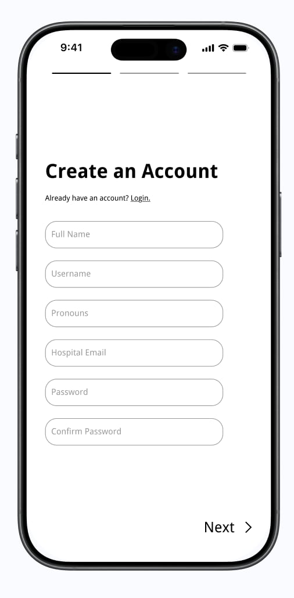
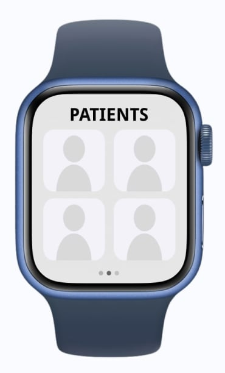

In modern hospital environments, clinicians are bombarded with hundreds of medical alerts per shift. The vast majority of these alerts are non-actionable, leading to a dangerous psychological phenomenon known as alarm fatigue.
Our goal was to design an intelligent, user-centered mobile application to help nurses and doctors filter out the noise, prioritizing actionable alerts efficiently.
We began by conducting deeply empathetic research to understand the daily realities of bedside care.
Synthesizing our research allowed us to clearly map the user journey and define our core problem statement.
From Crazy 8s to low-fidelity wireframes, we focused on establishing a clean information architecture that prioritizes readability in high-stress situations.



The UI system was crafted to be accessible and non-fatiguing. We used a highly intentional color palette where red is reserved strictly for life-threatening alerts, with softer hues for general notifications.
High-contrast, legible sans-serif fonts ensure readability at a glance. Dark-mode options were included for night shifts.
Developed a robust design system in Figma to ensure consistency across the entire application interface.
Explore the finalized interactive prototype below, demonstrating the new alert-filtering flow.
We tested the high-fidelity prototype with 5 working clinicians. Key findings led us to increase tap-target sizes on critical buttons and introduce a "swipe-to-acknowledge" gesture to prevent accidental dismissals.
The final application successfully reduced simulated cognitive load by prioritizing critical alerts and batching non-essential notifications.
Designing for healthcare requires an intense level of empathy and a deep understanding of high-stakes environments. This project taught me how to balance complex data architecture with clean, calming visual design. In the future, I hope to explore how machine learning can further predict and prevent false alarms.